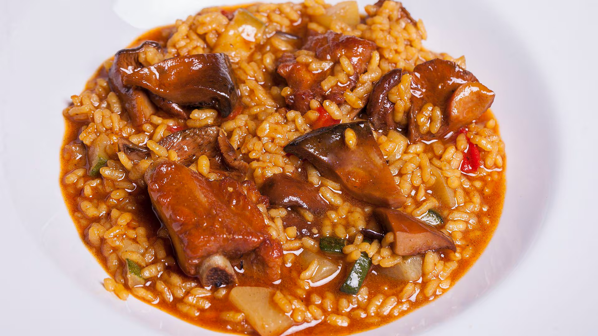

Guiso de Arroz

El guiso de arroz con carne es uno de esos platos tradicionales que nunca falta en las mesas de muchas familias.
Es una receta de las más queridas en la gastronomía de América Latina y España, ideal para aquellos días en los que se busca una comida que sea al mismo tiempo completa, nutritiva y sabrosa. Con ingredientes simples, pero de gran sabor, este guiso es perfecto para disfrutar en cualquier época del año, especialmente en los días fríos.
Esta receta tiene muchas variaciones dependiendo de la región, pero la base siempre será el arroz, la carne y un buen caldo que aporte el sabor profundo y característico que buscamos en un guiso.
En algunos países, se le añade más verduras como zanahorias, guisantes o pimientos, mientras que en otros se prepara de manera más sencilla, concentrándose en los sabores básicos de la carne y el arroz. Además, es un plato ideal para cocinar en grandes cantidades, lo que lo hace perfecto para compartir con la familia o para una comida reconfortante en casa.
Ingredientes
- 1 taza de arroz
- 500 g de carne de res (pueden ser trozos de carne de res para guisar o carne molida)
- 1 cebolla picada
- 2 dientes de ajo picados
- 2 tomates maduros picados o 1/2 taza de puré de tomate
- 1 zanahoria (opcional, picada en cubos pequeños)
- 4 tazas de caldo de carne o agua
- 1 cucharadita de comino
- 1 cucharadita de pimentón dulce o pimentón
- Aceite de oliva o de tu preferencia para sofreír
- Sal y pimienta al gusto
¿Cómo hacer un Alto Guiso?: Paso a Paso
- Preparar la carne: Si se usa la carne de res en trozos, cortarla en pedazos pequeños. Si se usa carne molida, simplemente sal y pimienta. Calentar un poco de aceite en una cazuela grande a fuego medio-alto y dorar la carne durante unos 5-7 minutos. Reservar la carne una vez que esté dorada.
- Sofreír los aromáticos: En la misma cazuela, añadir la cebolla picada y el ajo. Sofreír durante 3-4 minutos, hasta que la cebolla esté transparente. Agregar los tomates picados o el puré de tomate y cocinar durante unos 5 minutos hasta que el tomate esté bien cocido y suelte su jugo.
- Incorporar el arroz: Agregar el arroz a la cazuela y revolver bien para que se mezcle con los ingredientes. Cocinar por unos 2 minutos para que el arroz se impregne de los sabores del sofrito.
- Cocinar el guiso: Vertir el caldo de carne caliente (o agua) en la cazuela, añadir el comino, el pimentón, sal y pimienta al gusto. Remover bien, y dejar que todo hierva. Luego, reducir el fuego y cubrir la cazuela. Cocinar a fuego lento durante 20-25 minutos, o hasta que el arroz esté completamente cocido y haya absorbido todo el caldo.
- Servir: Una vez que el arroz esté listo, servir caliente. Se puede acompañar con una ensalada fresca o con papas fritas si se prefiere un toque más crujiente.
Volver Atrás